Ảnh mỗi ngày매일의 사진Daily photo
Chụp một tấm, cả nhà thấy ngay.한 장 찍으면 온 가족이 바로 봐요.Snap one, and the whole family sees it.
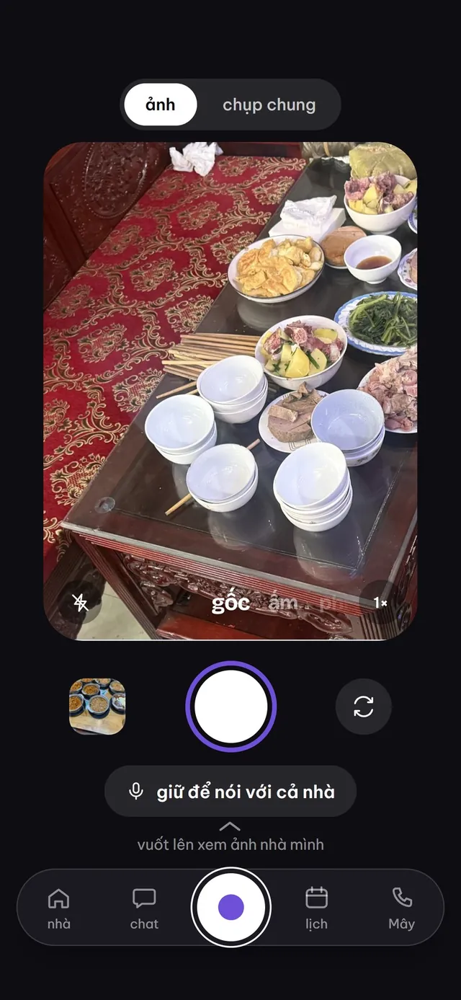
Bản beta, đang miễn phí베타 서비스 · 지금은 무료In beta, free for now
Một app cho cả nhà sống xa nhau. Con đi học, đi làm xa, bố mẹ ở nhà, mà vẫn biết hôm nay mỗi người ăn gì, làm gì. 떨어져 사는 가족이 함께 쓰는 앱이에요. 자녀가 멀리서 공부하거나 일해도 오늘 서로 뭘 먹고 뭘 했는지 알 수 있어요. An app for families who live apart. Kids are away for school or work, but you still hear about each other's day.
Mở ngay trên trình duyệt điện thoại. Chưa có trên App Store. 휴대폰 브라우저에서 바로 열려요. 앱스토어 출시 전이에요. Opens in your phone's browser. Not on the App Store yet.
Quét bằng điện thoại để mở휴대폰 카메라로 스캔하세요Scan with your phone to openapp.getsweethome.app
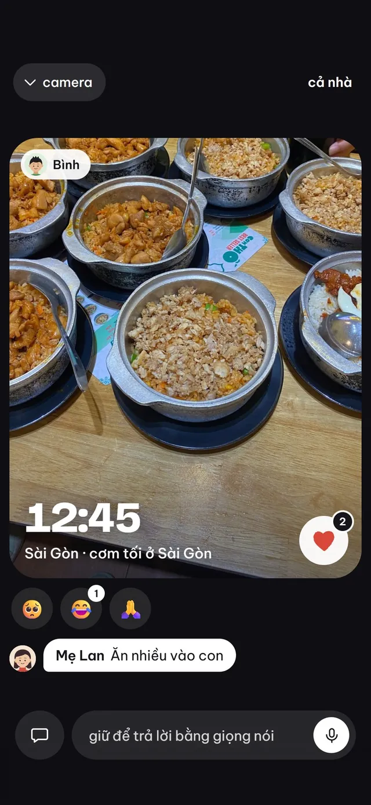
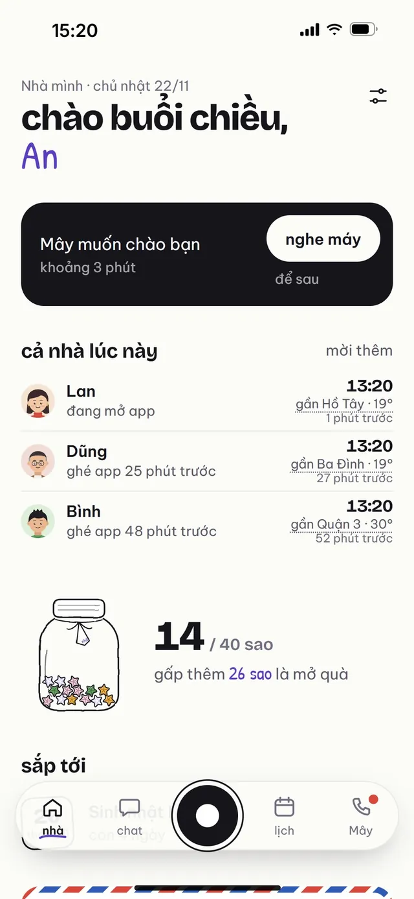
Một tuần của nhà mình우리 집의 한 주A week at home
Gọi về, ai cũng chỉ nói “vẫn ổn”. Sweet Home cho cả nhà thêm vài chuyện nhỏ để hỏi nhau. 전화하면 다들 “잘 지내”라고만 하죠. Sweet Home은 서로 물어볼 작은 이야깃거리를 만들어 줘요. On the phone, everyone says “I'm fine.” Sweet Home gives the family small things to ask about.
Thứ Hai월요일Monday
Bình chụp bữa tối ở Sài Gòn, máy cả nhà báo ngay. Mẹ nhắn lại: “Ăn nhiều vào con”. 빈이 사이공에서 저녁 사진을 올리면 온 가족 폰에 바로 알림이 가요. 엄마는 “많이 먹어”라고 답하죠. Bình shares dinner in Saigon and everyone's phone lights up. Mom replies: “Eat well, sweetie.”
Thứ Tư수요일Wednesday
Viết ngay trên điện thoại, chọn giấy, chọn nét chữ. An chạm vào dấu sáp là mở. 폰으로 쓰고 편지지와 글씨체를 골라 보내요. 안은 봉투의 실링을 눌러 열어요. Right on her phone, with the paper and handwriting she likes. An taps the wax seal to open it.
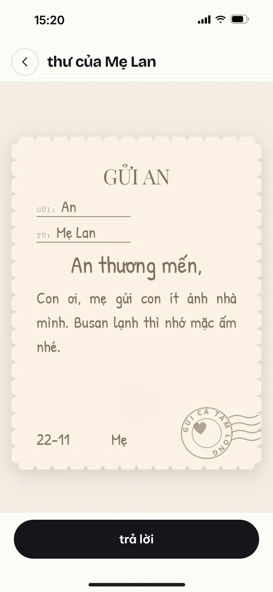
Cuối tuần주말Weekend
Mây là bạn nhỏ AI của nhà. Mỗi tuần Mây gọi từng người một lần, hỏi một chuyện, rồi hỏi thêm như người nhà. Mây는 우리 가족의 AI 친구예요. 매주 식구마다 한 번씩 전화해서 한 가지를 묻고, 가족처럼 이어서 물어봐요. Mây is the family's little AI friend. Once a week it calls each of you, asks about one story, and follows up like family.
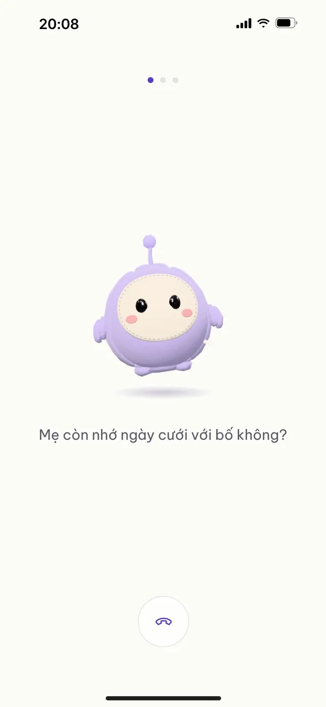
Ít phút sau몇 분 뒤A few minutes later
Cả nhà nghe chuyện bằng giọng thật của mẹ, nhẹ nhàng như nghe đài. Người kể muốn giữ riêng thì chạm một cái. 엄마의 실제 목소리로 들려주는 차분한 오디오를 온 가족이 함께 들어요. 이야기한 사람이 혼자 간직하고 싶으면 한 번만 누르면 돼요. The whole family hears it in her own voice, like a quiet radio show. If she'd rather keep it private, one tap does it.
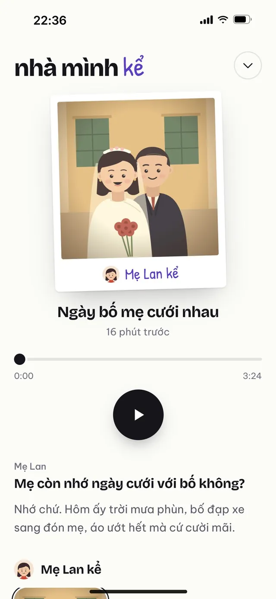
Tính năng기능Features
Chụp một tấm, cả nhà thấy ngay.한 장 찍으면 온 가족이 바로 봐요.Snap one, and the whole family sees it.

Hộp thư riêng của nhà, chạm dấu sáp để mở.우리 집 편지함, 실링을 눌러 열어요.A family mailbox. Tap the wax seal to open.
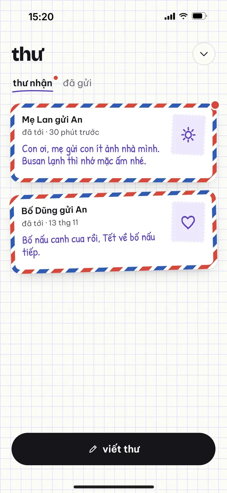
Mỗi người một nơi, AI ghép thành ảnh cả nhà. Luôn ghi “ảnh ghép AI”.각자 찍은 사진을 AI가 가족사진으로 합쳐요. 항상 ‘AI 합성 사진’ 표시가 붙어요.Wherever everyone is, AI makes one family photo. Always labeled “AI composite”.
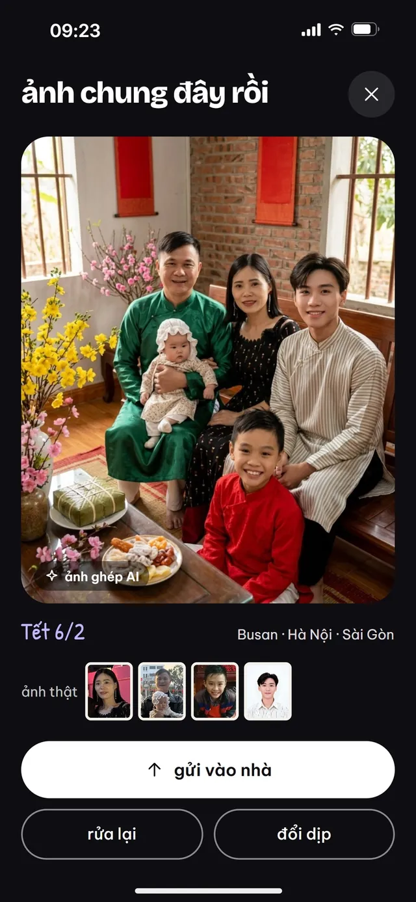
Đang gọi video, cùng chụp một dải ảnh.영상통화 중에 함께 네컷 사진을 찍어요.Take a photo strip together on a video call.
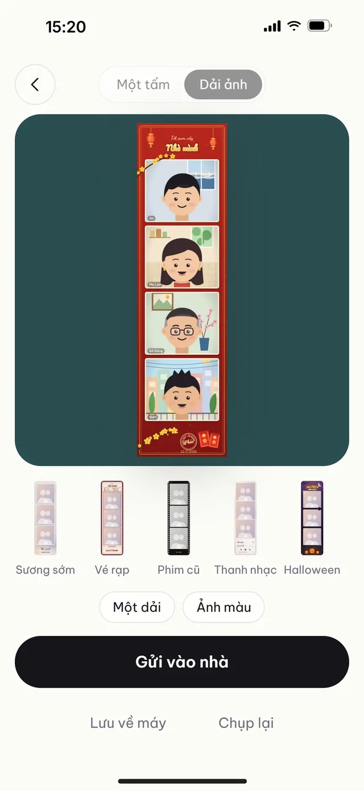
Chat, gọi video. Tin nhắn tự dịch Việt, Hàn, Anh.채팅과 영상통화. 베트남어·한국어·영어 자동 번역.Chat and video calls, auto-translated between Vietnamese, Korean and English.
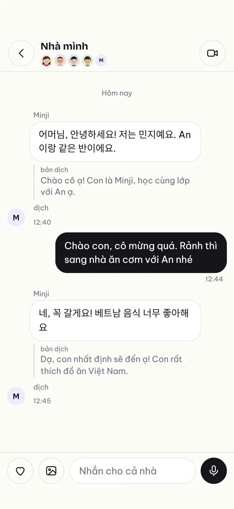
Ngày giỗ, sinh nhật theo lịch âm, tự đổi ra dương.음력 제사와 생일을 양력 날짜로 바꿔 줘요.Lunar birthdays and memorial days, converted for you.
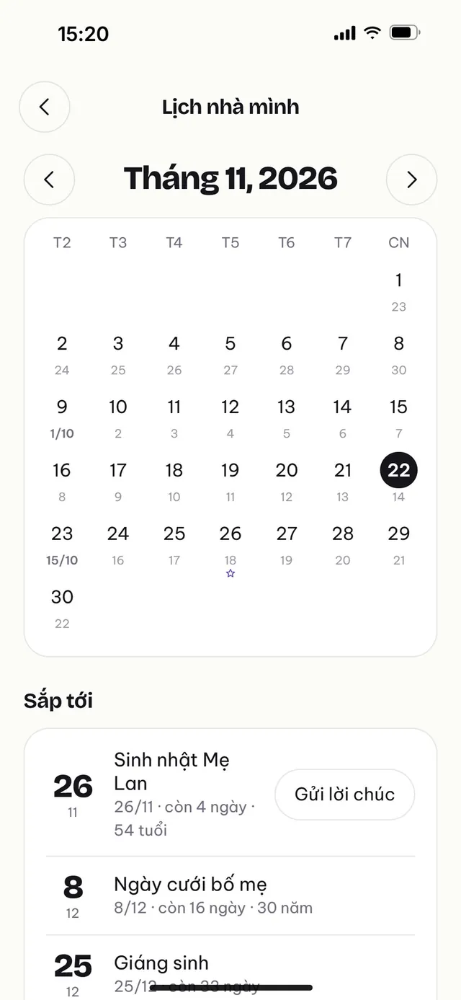
Mỗi lần thương nhau là một ngôi sao. Đủ mốc thì cả nhà có quà.서로 챙길 때마다 별이 쌓여요. 목표에 닿으면 온 가족이 선물을 받아요.Each small kindness adds a star. Milestones bring a gift for everyone.
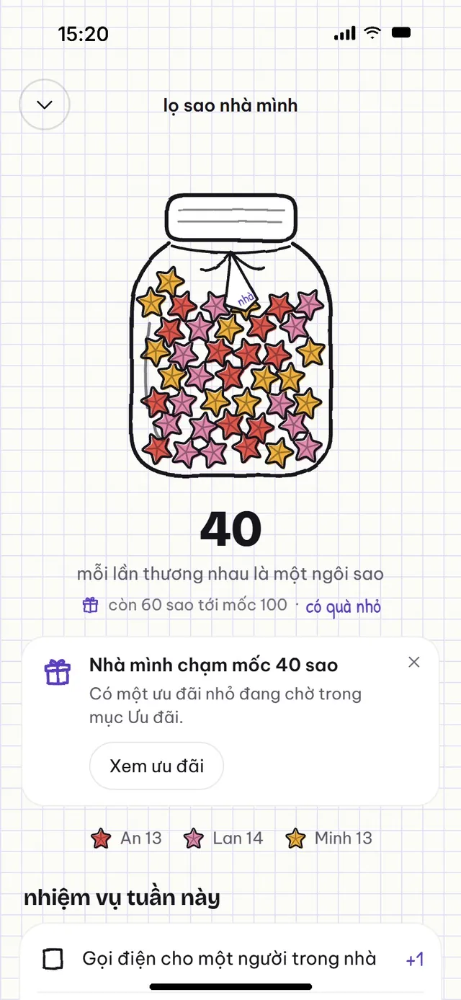
Bên đó mấy giờ, trời ra sao.그곳은 몇 시인지, 날씨는 어떤지.What time it is there, and the weather.
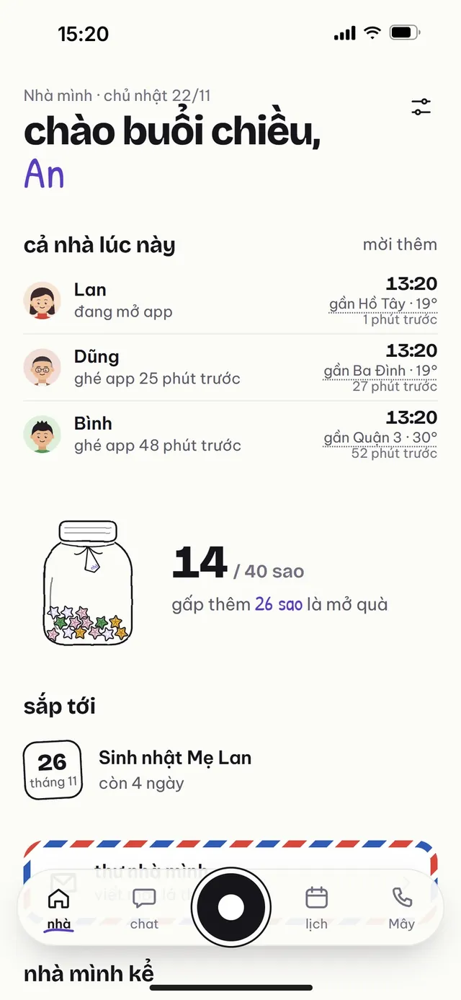
Trả lời xong là Mây biết nhà bạn hơn.이 답으로 Mây가 우리 집을 알아 가요.Your answers help Mây get to know your family.
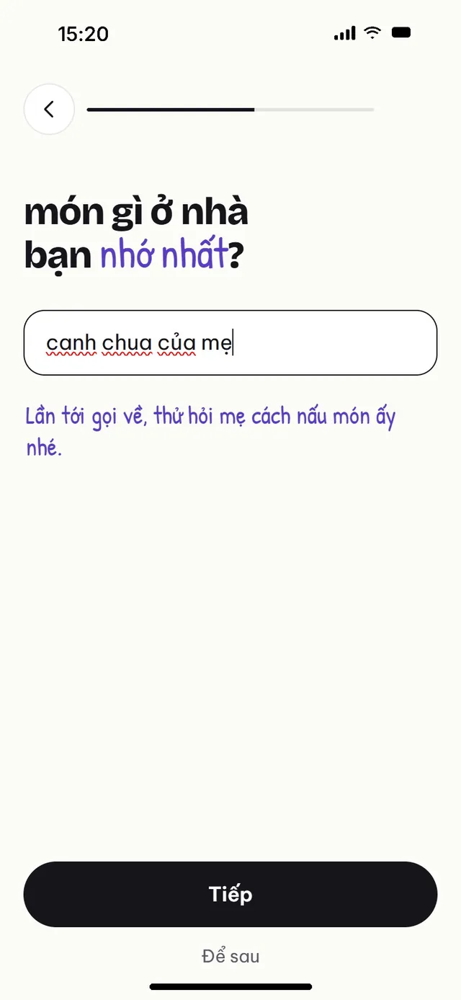
Cho bố mẹ부모님을 위해For parents
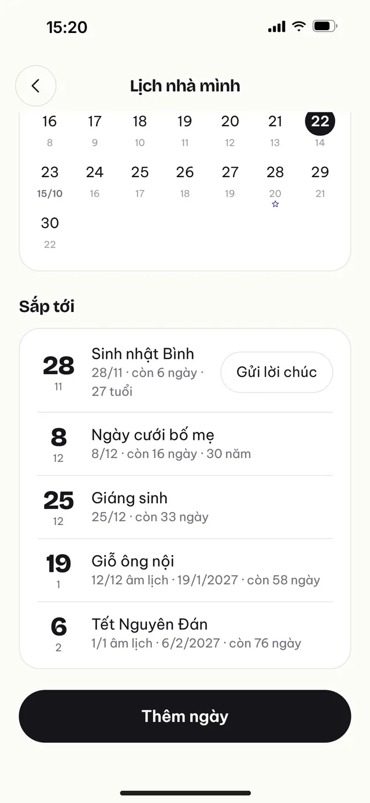
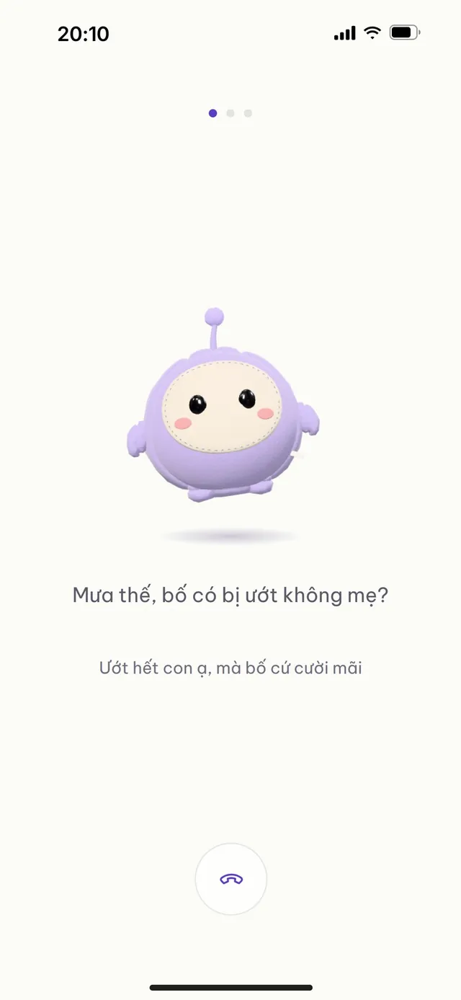
Lời hứa약속Our promises
Muốn vào nhà phải có mã nhà, và người lập nhà đồng ý. Ảnh, thư, tin nhắn chỉ người trong nhà thấy. 집 코드가 있어야 하고, 집을 만든 사람이 허락해야 들어올 수 있어요. 사진, 편지, 메시지는 같은 집 가족만 봐요. Joining takes your home code and a yes from whoever set up the home. Only people in the home can see photos, letters and messages.
Ảnh chụp chung bằng AI luôn có nhãn “ảnh ghép AI”, để không ai nhầm với ảnh thật. 실제 사진과 헷갈리지 않게 AI 가족사진에는 항상 ‘AI 합성 사진’ 표시를 붙여요. AI group photos always carry an “AI composite” label, so no one mistakes them for the real thing.
Bấm Rời nhà trong Cài đặt là ảnh, tin nhắn, cuộc gọi của bạn bị xoá hẳn. Người cuối cùng rời đi thì nhà cũng xoá luôn. 설정에서 ‘집 나가기’를 누르면 내 사진, 메시지, 통화가 완전히 지워져요. 마지막 사람이 나가면 집도 함께 지워져요. Tap Leave home in Settings and your photos, messages and calls are deleted for good. When the last person leaves, the home is deleted too.
Cho nhãn hàng브랜드 제휴For brands
Nhãn hàng về sức khoẻ, nhà thuốc, thực phẩm, vé về quê có thể gửi ưu đãi vào Sweet Home. Cả nhà cùng gom sao trong lọ để mở quà. 건강, 약국, 식품, 귀성길 교통처럼 어르신을 위한 브랜드라면 Sweet Home에 쿠폰을 보내 주세요. 가족이 함께 별을 모아 선물을 열어요. Brands in health, pharmacy, food or trips home can offer coupons in Sweet Home. Families unlock them together by filling their star jar.
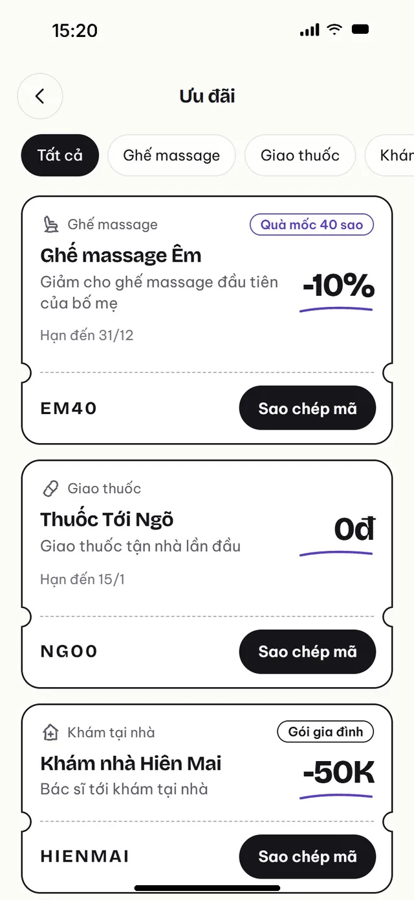
Đội ngũ팀Team
Trưởng nhóm, phát triển app, thiết kế팀장, 앱 개발, 디자인Team lead, app development, design
Phát triển app, thiết kế app, kiểm thử앱 개발, 앱 디자인, 테스트App development, app design, testing
Phát triển app, marketing앱 개발, 마케팅App development, marketing
Hỏi đáp자주 묻는 질문FAQ
Là bản đã dùng được thật, cả nhà vào ở ngay được. Nhóm vẫn đang sửa và thêm dần, nên đôi chỗ có thể còn đổi.
지금 바로 가족이 함께 쓸 수 있는 실제 앱이에요. 팀이 계속 고치고 다듬는 중이라 일부 화면은 바뀔 수 있어요.
It's the real app, and your family can move in today. We're still fixing and adding things, so some parts may change.
Không. Trong thời gian beta, Sweet Home miễn phí. App chưa có chỗ nào thu tiền.
없어요. 베타 기간에는 무료이고, 앱 안에 결제 기능도 아직 없어요.
No. Sweet Home is free during the beta. There's no payment anywhere in the app yet.
iPhone hoặc Android, mở bằng trình duyệt như Safari, Chrome. Thêm vào Màn hình chính để mở như một app. Trên iPhone, phải thêm vào Màn hình chính thì mới nhận được thông báo.
아이폰과 안드로이드폰 모두 사파리, 크롬 같은 브라우저에서 열면 돼요. 홈 화면에 추가하면 앱처럼 쓸 수 있어요. 아이폰은 홈 화면에 추가해야 알림을 받을 수 있어요.
iPhone or Android, in a browser like Safari or Chrome. Add it to your Home Screen to open it like an app. On iPhone, you need to add it to the Home Screen to get notifications.
Một người dựng nhà rồi gửi mã nhà qua Zalo hay tin nhắn. Người nhận nhập mã, người lập nhà đồng ý là vào.
한 사람이 집을 만들고 집 코드를 메신저나 문자로 보내요. 받은 사람이 코드를 입력하고, 집을 만든 사람이 허락하면 들어와요.
One person sets up the home and sends the home code by Zalo or text. The others enter the code, and the person who set it up lets them in.
Mây chỉ nói chuyện khi bạn bấm “nghe máy”. Chưa tiện thì bấm “để sau”. Mỗi người tự bật hay tắt thông báo cuộc gọi hằng tuần trong Cài đặt, mục Thông báo. Lần đầu gọi, máy sẽ hỏi bạn có cho dùng micro không.
‘받기’를 눌러야만 Mây와 대화가 시작돼요. 바쁠 때는 ‘나중에’를 누르면 돼요. 주간 통화 알림은 각자 설정의 ‘알림’에서 켜고 끌 수 있어요. 처음 통화할 때는 마이크를 써도 되는지 먼저 물어봐요.
Mây only talks after you tap “answer”. Busy? Tap “later”. Each person can turn weekly call notifications on or off in Settings, under Notifications. On the first call, your phone asks before using the microphone.
Tiếng Việt, 한국어 và English. Mỗi người chọn tiếng của mình, tin nhắn tự dịch cho nhau.
베트남어, 한국어, 영어를 지원해요. 각자 편한 언어를 고르면 메시지는 자동으로 번역돼요.
Vietnamese, Korean and English. Everyone picks their own, and messages are translated between you.
Vào Cài đặt, bấm Rời nhà: ảnh, tin nhắn và cuộc gọi của bạn bị xoá hẳn, không lấy lại được. Người trong nhà cũng xoá được một người khỏi nhà. Chi tiết ở trang quyền riêng tư.
설정에서 ‘집 나가기’를 누르면 내 사진, 메시지, 통화가 완전히 지워지고 되살릴 수 없어요. 가족 구성원을 집에서 내보낼 수도 있어요. 자세한 내용은 개인정보 처리방침에 있어요.
In Settings, tap Leave home: your photos, messages and calls are deleted for good. People in a home can also remove a member. Details are in the privacy policy.
Một người dựng nhà, cả nhà vào sau. Miễn phí trong thời gian beta. 한 사람이 집을 만들면 나머지 가족이 들어와요. 베타 기간에는 무료예요. One person sets up the home, the rest follow. Free during the beta.
Quét bằng điện thoại để mở휴대폰 카메라로 스캔하세요Scan with your phone to openapp.getsweethome.app